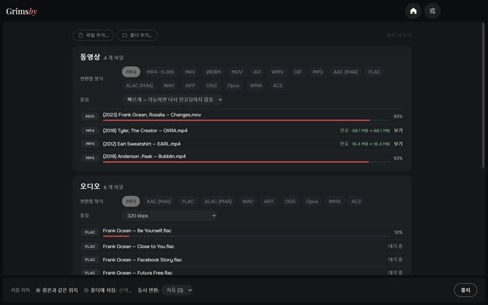
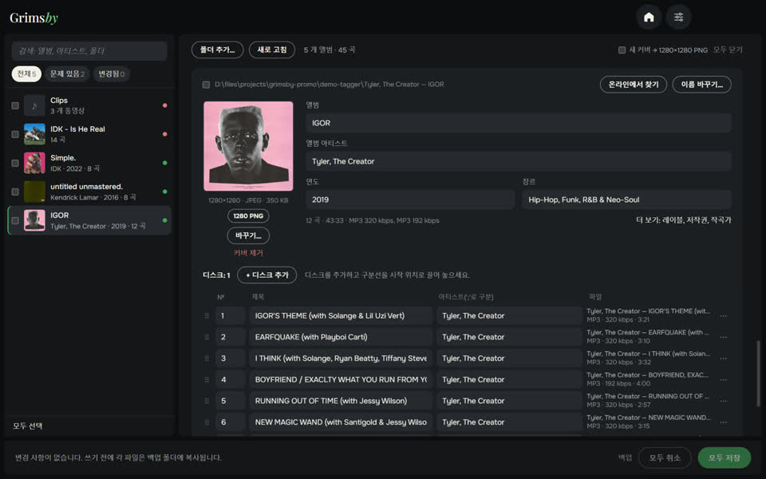

같은 디자인의 무료 오프라인 앱 세 가지 — 자신만의 음악 라이브러리를 가꾸는 사람을 위해.

Grimsby Player
다운로드한 음악과 뮤직비디오를 위한 오프라인 플레이어
음악을 다운로드하고 모으는 사람을 위한 플레이어입니다. 음악 폴더를 지정하면 컬렉션이 스트리밍 서비스 같은 라이브러리가 됩니다. 연도별 앨범, 아티스트 페이지, 앨범 옆의 뮤직비디오까지. 모든 것은 내 컴퓨터에만 있습니다. 계정도, 구독도, 광고도 없습니다.
- 발매 연도별 앨범과 앨범·영상·공연·피처링을 모은 아티스트 페이지
- 뮤직비디오, 공연, 앨범 영상을 앨범에 자동 연결
- 갭리스 재생, 볼륨 자동 조절, 10밴드 이퀄라이저
- 저절로 만들어지는 스마트 라디오 플레이리스트
- 감상·컬렉션 통계, 앨범 통계, 연말 결산
- 변환, 중복 파일 찾기, 라이브러리 점검 기능 내장

Grimsby Converter
영상, 오디오, 사진, 문서를 오프라인으로 변환
내 컴퓨터에서 바로 동작하는 파일 변환기입니다. 파일과 폴더를 한꺼번에 끌어다 놓으면 자동으로 그룹이 나뉘고, 그룹마다 형식과 품질을 정해 버튼 하나로 모두 변환합니다. 어떤 파일도 업로드되지 않습니다.
- 영상, 오디오, 사진, 문서, 스프레드시트, 프레젠테이션을 한 창에서
- 폴더째 한 번에 추가하면 자동으로 그룹 분류
- 빠른 모드: MOV를 MP4로 몇 초 만에, 화질 손실 없이
- 수십 가지 형식: DSD 오디오와 M4B 오디오북부터 포토샵 PSD, Keynote까지
- 원본은 그대로, 용량 제한도 워터마크도 없음
- 여러 파일을 동시에 — 프로세서가 감당하는 만큼


Grimsby Tagger
태그 일괄 편집: 앨범, 커버, 파일 이름
파일 하나하나가 아니라 앨범 단위로 작업하는 음악 라이브러리 태그 편집기입니다. 폴더를 지정하면 파일을 앨범으로 묶고, 커버가 있는 카드로 보여 주며, 문제가 있는 곳을 표시합니다. 모두 고친 뒤 버튼 하나로 저장하세요.
- 앨범이 알아서 정리: 디스크, 에디션, 태그 없는 파일까지
- 문제가 한눈에: 빈 칸, 제각각인 값, 없는 커버, 깨진 글자
- 파일 이름과 폴더 이름으로 클릭 한 번에 수정
- 인터넷에서 앨범을 찾아 트랙을 내 파일과 자동 연결
- 템플릿으로 파일과 폴더 이름 변경, 되돌리기 가능
- 영상도: MP4, MKV, MOV 등 — 태그와 커버만, 다시 인코딩 없이
